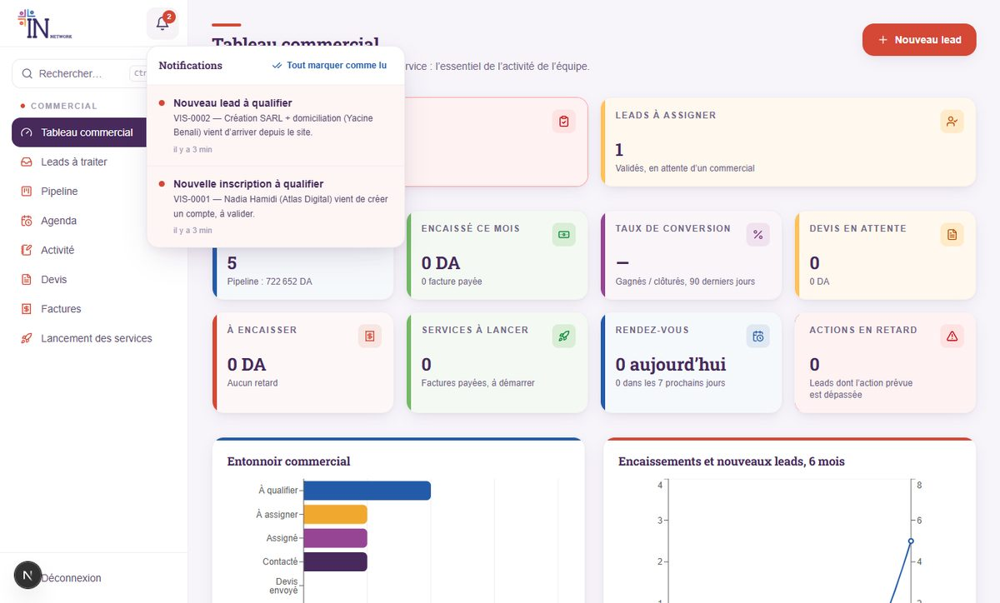
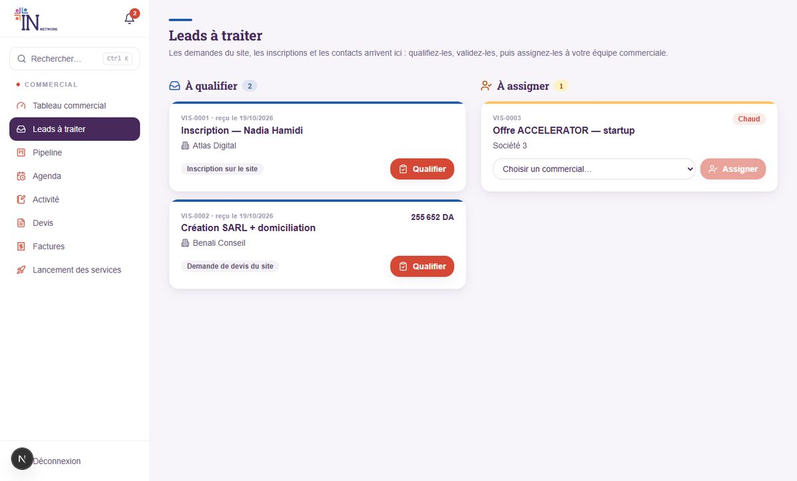
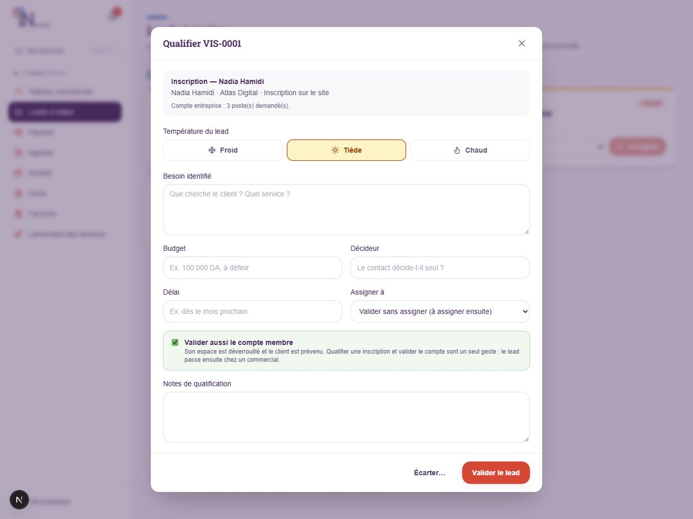
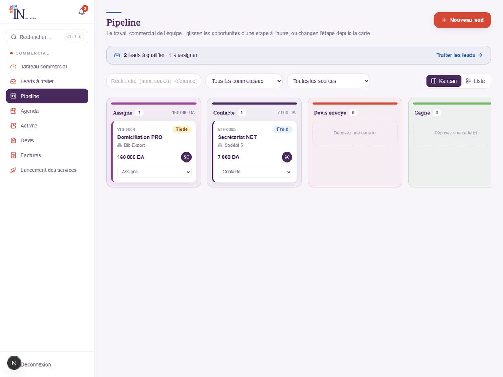

1 Votre rôle
Vous faites tourner le lieu au quotidien : accueil des membres, suivi administratif, contenus du site.
Votre menu dépend des accès que l’administrateur vous a donnés. Ce guide décrit toutes les pages possibles ; si l’une d’elles n’apparaît pas chez vous, c’est que vous n’y avez pas droit — demandez-le à l’administrateur.
Pour chaque page, votre accès est l’un de ces trois niveaux :
- Aucun : la page n’est pas dans votre menu.
- Lecture : vous consultez, sans pouvoir modifier.
- Modification : vous consultez et vous modifiez.
Particularité de votre rôle : dès que vous avez accès au CRM, vous voyez tous les leads de l’équipe (pas seulement les vôtres) et vous pouvez les qualifier et les assigner, comme le responsable commercial. En revanche, vous n’avez pas accès à la gestion des utilisateurs système.
2 Premiers pas
- Connectez-vous sur
votre-site/adminavec l’email et le mot de passe reçus par message. - Changez votre mot de passe : menu Système → Mon compte (8 caractères minimum). Faites-le dès la première connexion.
- Regardez la cloche 🔔 en haut à gauche : elle vous prévient d’un nouveau lead à qualifier ou d’un message. Cliquez sur une alerte pour ouvrir la page concernée ; « Tout marquer comme lu » vide la liste.
- Utilisez la recherche Ctrl + K pour retrouver un lead, un devis ou une facture en tapant un nom ou un numéro.

3 Votre journée type
Une routine de dix minutes le matin évite les oublis.
| Quand | Où aller | Quoi faire |
|---|---|---|
| Dès l’arrivée | 🔔 Cloche | Lire les alertes de la nuit, ouvrir les nouveaux leads. |
| Matin | Validations | Nouveaux membres, justificatifs de paiement reçus, événements ou demandes en attente. |
| Matin | Leads à traiter | Qualifier les leads entrants, puis assigner ceux qui sont validés. |
| Dans la journée | Réservations | Confirmer ou annuler les demandes de salles et d’espaces. |
| Dans la journée | Messages de contact | Répondre aux visiteurs. |
| Fin de journée | Paiements | Confirmer les virements bancaires reçus. |
| Chaque semaine | Événements / Galerie | Publier les événements à venir, ajouter les photos récentes. |
4 Valider les nouveaux membres
Tant que son compte n’est pas validé, un nouveau membre ne voit que « Situation du compte ». Valider son compte déverrouille tout son espace.
Pourquoi un compte est-il en attente ?
Quand une personne s’inscrit (« Devenir membre »), la plateforme crée à la fois son compte et un lead « À qualifier ». Vous n’avez qu’un geste à faire, de deux façons équivalentes :
Depuis « Leads à traiter »
Cliquez sur « Qualifier » sur le lead d’inscription. La case « Valider aussi le compte membre » est cochée par défaut : validez, et le compte est ouvert, le membre prévenu, le lead prêt à être assigné.
Depuis « Validations »
Section « Nouveaux membres » : cliquez sur « Valider le compte ». Le lead d’inscription passe automatiquement à « À assigner ».
Avant de valider, jetez un œil au profil : nom, entreprise, email vérifié (la liste signale « email non vérifié »). En cas de doute (profil fantaisiste, doublon), écartez le lead avec un motif plutôt que de valider.
Gérer un compte existant
Page Membres : vous voyez tous les comptes avec leur statut. Vous pouvez désactiver (la personne ne peut plus se connecter, son historique est conservé) ou réactiver un compte. La suppression définitive est à éviter : préférez désactiver.
Page Entreprises (comptes d’entreprise) : vous ajustez le nombre de postes accordés (impossible de descendre sous le nombre de collaborateurs déjà rattachés) et vous activez ou désactivez l’entreprise.
5 Vérifier les paiements
Deux situations : le reçu envoyé par un membre, et le virement bancaire à confirmer.
Un membre a envoyé un justificatif de paiement
Il apparaît dans Validations → Justificatifs de paiement à vérifier.
- Ouvrez le justificatif (image ou PDF) et comparez le montant et la référence avec le devis ou la facture.
- Cliquez sur « Accepter ». Deux cases vous sont proposées : « Enregistrer le paiement de la facture » (qui lance aussi les services associés) et « Valider le compte » si ce n’est pas déjà fait.
- Ou cliquez sur « Refuser » en indiquant un motif clair : le membre le lit et peut renvoyer un autre justificatif.
Un virement bancaire est arrivé
Page Paiements (ou la section « Virements bancaires en attente » de Validations) : repérez la ligne du membre, vérifiez le montant sur le relevé de la banque, puis cliquez sur « Confirmer ».
Ne confirmez un paiement qu’après l’avoir vu sur le compte bancaire. La confirmation lance la suite : abonnement ou prestation.
6 Traiter les leads
Un lead est une personne ou une entreprise qui s’intéresse à IN NETWORK. Ils arrivent tout seuls dans Leads à traiter.
Vous intervenez sur les deux premières colonnes ; ensuite le commercial prend le relais.

Qualifier un lead
- Cliquez sur « Qualifier » sur la carte (toute la carte ouvre la fiche si vous préférez voir le détail d’abord).
- Choisissez la température : Froid (curiosité), Tiède (intéressé), Chaud (prêt à acheter).
- Notez l’essentiel : besoin, budget, qui décide, délai. Quelques mots suffisent, le commercial s’en servira.
- Assignez tout de suite si vous savez à qui le confier (« Valider et assigner »), sinon « Valider sans assigner ».
- Ou cliquez sur « Écarter… » avec un motif (doublon, hors périmètre, injoignable) : le lead est clos.

Assigner à un commercial
Dans la colonne « À assigner », choisissez un commercial dans la liste (le nombre de leads en cours de chacun est indiqué, pour répartir équitablement) puis « Assigner ». Il reçoit une notification.
- Un lead « À qualifier » ne peut pas être assigné avant d’avoir été qualifié.
- Un lead déjà en cours de traitement (Contacté, Devis envoyé) peut être réassigné à un autre commercial, mais pas laissé sans responsable.
Autres pages du CRM (selon vos droits)
- Pipeline : vue d’ensemble du travail commercial en colonnes, filtrable par commercial.
- Agenda : rendez-vous de l’équipe.
- Devis, Factures, Lancement des services : si ces blocs vous sont ouverts, voir le « Guide de l’équipe commerciale » pour le détail.

7 Réservations et entreprises
- Réservations : la liste indique le membre, l’espace, le créneau, le prix et le statut. Cliquez sur Confirmer ou Annuler. Le membre est prévenu.
- Entreprises : un représentant invite ses collaborateurs dans la limite des postes. Si une entreprise demande plus de postes, modifiez le nombre sur sa ligne.
Un membre ne peut réserver que si son compte est validé et son profil complet. S’il se plaint d’un blocage, vérifiez ces deux points en premier.
8 Événements, galerie et contenu du site
Ce que vous publiez apparaît tout de suite sur le site.
Publier un événement
- Page Événements → créez l’événement : titre, description, type, date et heure, lieu, nombre de places, visuel de couverture. Précisez s’il est organisé par IN NETWORK, externe ou co-organisé.
- Il est d’abord enregistré en brouillon : invisible du public.
- Relisez, puis cliquez sur « Publier ». Après l’événement, utilisez « Archiver » et ajoutez les photos ou la vidéo récap.
Les autres contenus
| Page | Ce que vous y faites |
|---|---|
| Galerie du lieu | Ajouter des photos et vidéos réelles du lieu, par catégorie ; supprimer une image obsolète. |
| Témoignages | Ajouter un avis de membre (texte et/ou vidéo) et le publier. |
| Partenaires | Créer la fiche (logo, secteur, description) ; elle n’est visible qu’une fois publiée. |
| Experts | Tenir à jour l’annuaire d’experts affiché sur le site. |
Publiez uniquement des informations et des visuels réels et autorisés (accord du membre pour un témoignage, du partenaire pour son logo).
9 Messages de contact
Les messages envoyés depuis le formulaire « Contact » du site arrivent ici et créent en même temps un lead.
- Ouvrez Messages de contact (section « Sources des leads »). Les non lus sont signalés.
- Cliquez sur « Répondre », rédigez, puis « Envoyer par email » : la réponse part à l’adresse du visiteur et le message est marqué « Répondu ».
- Le lien « Lead LD-… » à côté du nom ouvre la fiche du lead correspondant, que le responsable commercial qualifiera.
10 Questions fréquentes
- Une page de ce guide n’est pas dans mon menu.
- Vous n’y avez pas accès. Demandez à l’administrateur de vous accorder « Lecture » ou « Modification » sur ce bloc.
- J’ai validé un compte par erreur.
- Prévenez l’administrateur. Vous pouvez en attendant désactiver le compte depuis la page Membres.
- Je vois « Introuvable » en ouvrant un lead.
- Il a peut-être été supprimé ou n’existe plus. Utilisez la recherche Ctrl + K pour le retrouver par nom ou référence.
- Le membre dit qu’il n’a rien reçu par email.
- Demandez-lui de vérifier ses courriers indésirables. Sinon, signalez-le à l’administrateur : la configuration d’envoi du serveur est à contrôler.
- Je me suis trompé de commercial en assignant.
- Rouvrez le lead (fiche ou « Pipeline »), carte « Assignation », choisissez le bon commercial et cliquez sur « Réassigner » : les deux sont prévenus.